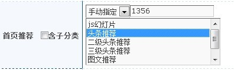
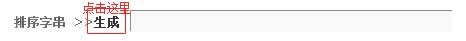
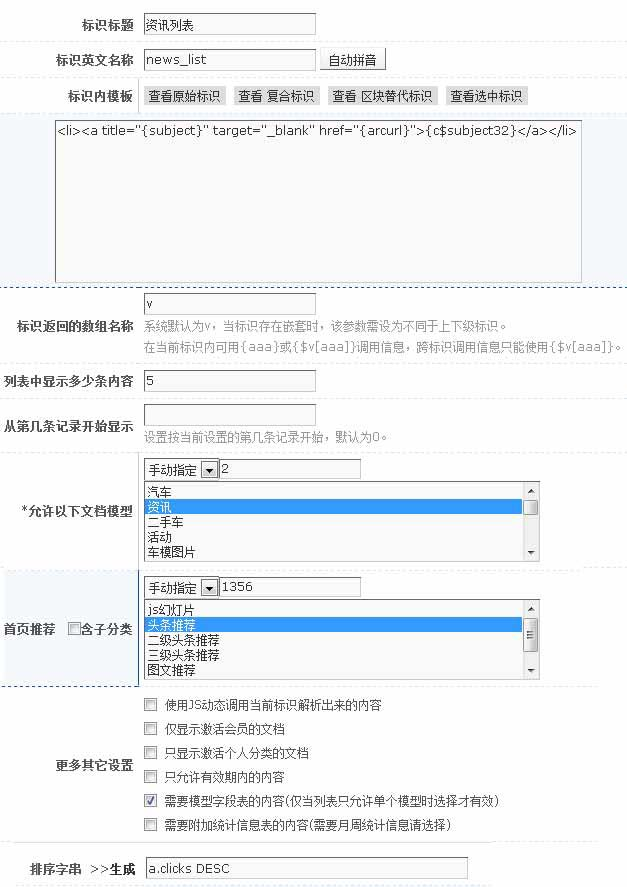
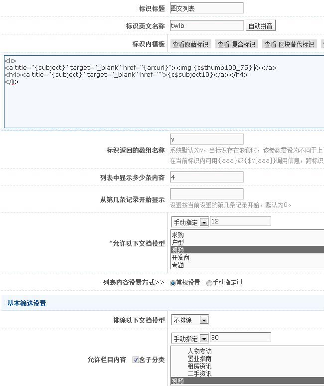
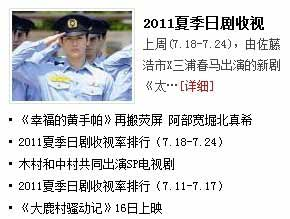
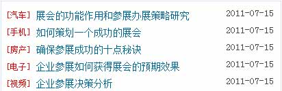

案例一
效果:
原html代码:
<li><a title="" target="_blank" href="#">2011中国重庆LED暨照明展-开展如火</a></li>
<li><a title="" target="_blank" href="#">招商银行袁晓懋：创新应用新媒体传播</a></li>
<li><a title="" target="_blank" href="#">东至重大项目招商引资步伐加快上半个</a></li>
<li><a title="" target="_blank" href="#">长治县招商引资瞄准大市场</a></li>
<li><a title="" target="_blank" href="#">招商置业联动颁奖大会隆重举行</a></li>
标识模板(template)代码:
<li><a title="{subject}" target="_blank" href="{arcurl}">{c$subject32}</a></li>
说明：
{c$subject32}为文本处理后的标识。
推荐)：调用推荐列表，点推荐一般选择“手动指定”，如图
排序)：给列表排序，点排序生成排序字段，如图
点击率的降序如下图：

整体截图如下：

案例二(图文)
效果:
原html代码:
<li>
<a title=" " target="_blank" href="#"><img width="100" height="75" src="../image/5.jpg" alt=""/></a>
<h4><a title="" target="_blank" href="#">视频: 山东肥霸王化工</a></h4>
</li>
<li>
<a title="" target="_blank" href="#"><img width="100" height="75" src="../image/5.jpg" alt=""/></a>
<h4><a title=" " target="_blank" href="#">视频: 济南淘宝摄影</a></h4>
</li>
<li>
<a title="" target="_blank" href="#"><img width="100" height="75" src="../image/5.jpg" alt=""/></a>
<h4><a title="" target="_blank" href="#">视频: 期末考试</a></h4>
</li>
<li>
<a title="" target="_blank" href="#"><img width="100" height="75" src="../image/5.jpg" alt=""/></a>
<h4><a title="" target="_blank" href="">视频: 高清 大众 </a></h4>
</li>
标识模板(template)代码:
<li>
<a title="{subject}" target="_blank" href="{arcurl}"><img {c$thumb100_75} alt="{subject}"/></a>
<h4><a title="{subject}" target="_blank" href="">{c$subject10}</a></h4>
</li>
说明：{c$thumb100_75}为图片模块标识，文档的缩略图（详细可见图片模块）。
整体截图如下

案例3(图文+标题列表)
效果:

原html代码:
<li class="pTxt clearfix">
<a title=" " target="_blank" href="#"><img width="120" height="90" src="../image/5.jpg" alt=""/></a>
<h4><a title="" target="_blank" href="#">标题标题标题</a></h4>
<p>摘要摘要摘要摘要摘要摘要摘要摘要摘要摘要摘要摘要摘要摘要摘要摘要<a href="#">…[详细]</a></p>
</li>
<li> <a title=" " target="_blank" href="#">标题标题标题标题标题标</a></li>
<li> <a title=" " target="_blank" href="#">标题标题标题标题标题标</a></li>
<li> <a title=" " target="_blank" href="#">标题标题标题标题标题标</a></li>
<li> <a title=" " target="_blank" href="#">标题标题标题标题标题标</a></li>
标识模板(template)代码:
{if $v['sn_row']==1}
<li class="pTxt clearfix">
<a title="{subject}" target="_blank" href="{arcurl}"><img {c$thumb120_90} alt="{subject}"/></a>
<h4><a title="{subject}" target="_blank" href="">{c$subject10}</a></h4>
<p>{c$abstract40}<a href="{arcurl}">…[详细]</a></p>
</li>
{else}
<li> <a title="{subject}" target="_blank" href="{arcurl}">{c$subject32}</a></li>
{/if}
说明：{{c$abstract40}是文本处理后的摘要，本例中加了一个判断语句，第一条显示图文，后面5条为列表，共循环6条信息;$v['sn_row']为以1开头的序号，当调用第一条时$v['sn_row']为1，第二条为2，…
案例4(带栏目的标题列表)
效果:

原html代码:
<li><i class="time">2010-10-10</i>栏目<a title=" " target="_blank" href="#">标题标题标题标题标题标</a></li>
<li><i class="time">2010-10-10</i>栏目<a title=" " target="_blank" href="#">标题标题标题标题标题标</a></li>
<li><i class="time">2010-10-10</i>栏目<a title=" " target="_blank" href="#">标题标题标题标题标题标</a></li>
<li><i class="time">2010-10-10</i>栏目<a title=" " target="_blank" href="#">标题标题标题标题标题标</a></li>
<li><i class="time">2010-10-10</i>栏目<a title=" " target="_blank" href="#">标题标题标题标题标题标</a></li>
标识模板(template)代码:
<li><i class="time">{c$createdate_ymd}</i>{c$cate}<a title="{subject}" href="{arcurl}">{c$subject32}</a></li>
说明：{c$createdate_ymd}是时间日期（详细可见时间日期）;{c$cate}为类目结点(详细可见类目结点，需要注意的是追塑选择“二级类目”选项)